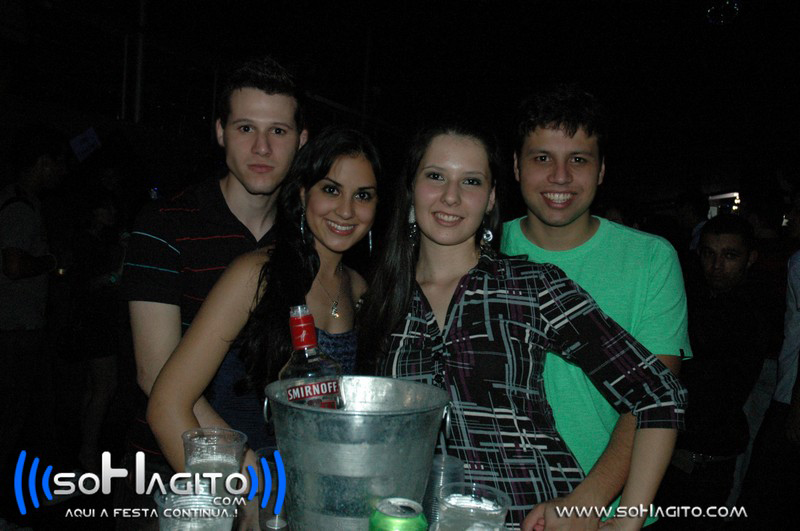
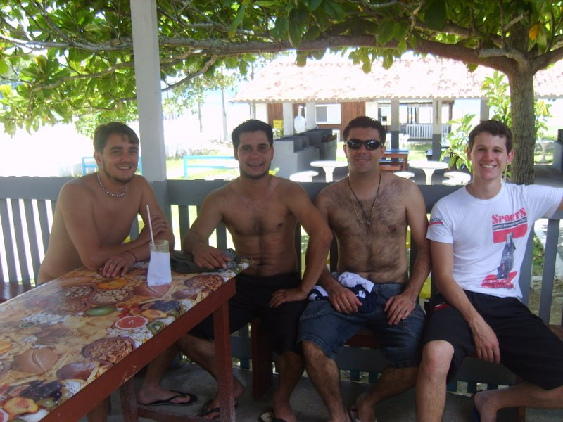
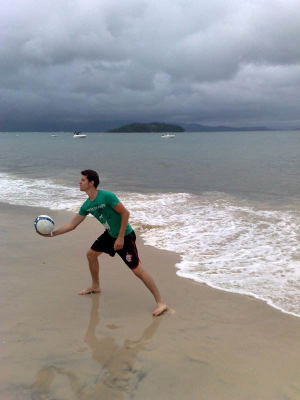
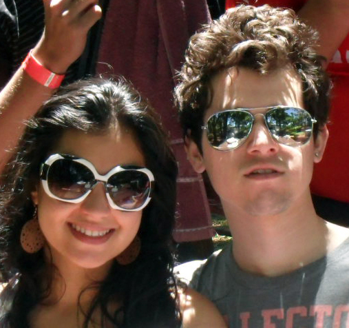
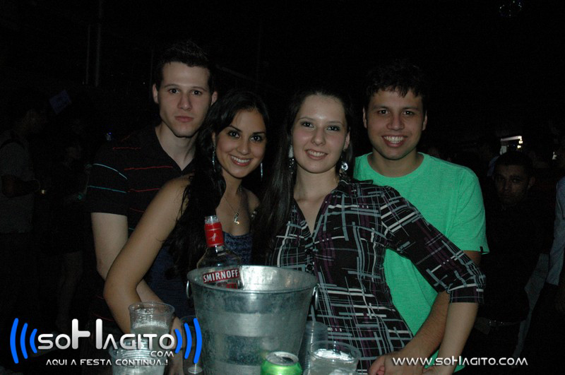
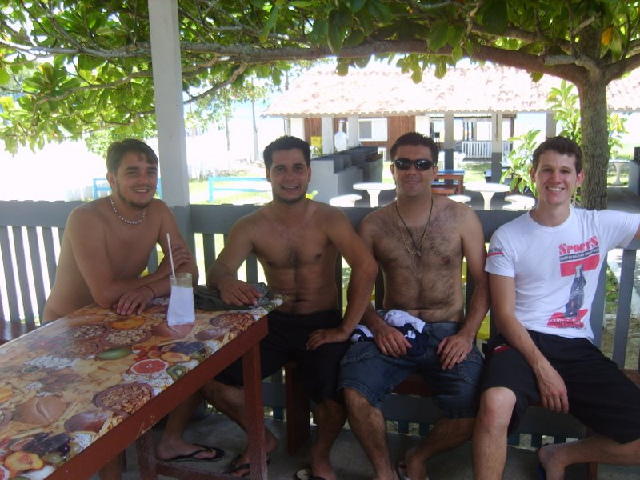
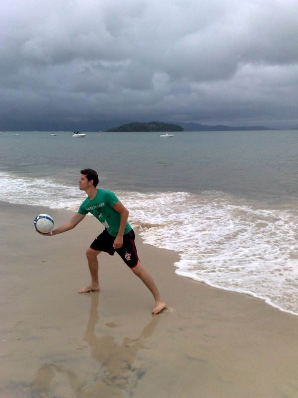
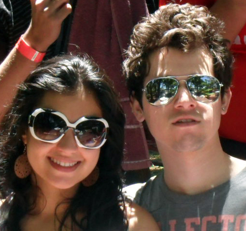

Thiago Cagnin Rodrigues
26, Single
Avenue Tupi, 1997 - Apartment 506
Center - Pato Branco, PR, Brazil.
+55 46 9914-3794
thiagocr.utfpr@gmail.com
Summary of Qualifications
- Software Web based development and / or desktop development;
- Advanced database management;
- Work effectively alone or in groups;
- Experience in developing Web Service with Java since January /2014;
- Developing MVC (Model, View, Controller) with PHP;
- Developing PHP, CSS, HTML, AJAX and JS since September / 2009;
- Knowledgeable in Angular JS and bootstrap;
- Developing in Delphi 7, Delphi for .NET and Delphi XE since January / 2008;
- Experience in SQL Server (2000,2005,2008,2012) since December / 2007;
- Experience in MySQL, Oracle 10g / 11g, Postgres 8.4 / 9.1 and Firebird 2.1 since August / 2010;
- (Delphi) Experience in creating reports with FastReport and QuickRepot;
- (JavaScript and CSS) Advanced knowledge of JQuery library and styling with CSS;
- (PHP) Intermediate developing knowledge with Zend Framework;
- Degree in Systems Development and Technology Analysis at the Federal Technological University of Paraná.
Professional experience
Web Development / Desktop - Position: Team Lead
Company: IDS Software and Consulting (www.ids.inf.br), Pato Branco, Paraná. (August 2011 - currently)
- Database:
- Implementation and maintenance of the database (Firebird, Oracle, Postgres and SQL Server);
- Creation, maintenance and implementation of codes in TSQL and pgSQL;
- Development and maintenance of procedures, trigguers and views for all databases;
- Filegroups management for images to in SQL Server;
- Development of procedures, trigguers, and views for database;
- Development and maintenance of backups and restores applications;
- Web programming:
- Web Development Service Rest with Java technology;
- Implementation and maintenance of systems developed in HTML, CSS, JS and Delphi for.Net;
- Implementation and maintenance services for Windows accessed by Web applications;
- Server Configuration IIS applications (Windows);
- Use of REM Objects connections for creating Web Services;
- Programming desktop:
- Application development in Delphi (Pascal script);
- Maintenance and implementation of WinSaude system (mainline enterprise system) developed in Delphi 7;
- Creating and maintaining reports using FastReport and QuickReport;
- Delphi instructor in teaching new employees;
Web Development - Position: Systems Analyst
Company: Datazip Sistemas, Pato Branco, PR, Brazil. (August, 2010 - August,2011)
- Framework Web development based on MVC for web site management;
- Using PHP, MySQL, HTML, XML, JavaScript and Ajax for Web Sites development;
- Use of the jQuery library, CSS and HTML;
- Using MXML and ActionScript (Flash);
- Using Photoshop to crop, edit and create layouts;
- Use of plugins for developing PHP and HTML and javascript plugins (Cake PHP, ZendFramework, Jquery ...);
Development web / desktop - Position: Junior Programmer
Company: Xpert (www.xpert.com.br), Pato Branco, PR, Brazil. (January, 2009 - July, 2010)
- Web programming:
- The company's website development;
- Using PHP, MySQL, HTML, XML, JavaScript and Ajax to develop the site;
- Migration from desktop system for web platform;
- The web system development with PHP, MsSql, Html, JavaScript, Ajax, XML, jQuery, CSS and fpdf;
- Development of a new project with the use of ActionsScript, Flash / Flex, Postgres, MsSql and PHP;
- Using Photoshop to crop, edit and create images;
- Programming desktop:
- Application development in Delphi (Applications for export and import of data);
- Maintenance and implementation of systems developed in Delphi 7 and Delphi 2007;
- Creating Aintenance reports using FastReport and QuickReport;
- Creation, maintaining and implementation of codes in TSQL language (SQL Server);
- Development of procedures, trigguers and views for the database;
- Using Microsoft Visual Source Safe for code sharing and version control;
Technical Support
Company: Sponte (www.sponte.com.br), Pato Branco, PR, Brazil. (December, 2008 - December, 2009)
- Customer service via chat, phone and skype;
- Design of the system user manuals for the users;
- Conducting tests on the system for each new version released;
- Training sessions to customers via skype and VNC.
Knowledge Technologies
Database:
- Microsoft SQL Server 2000/2005/2008/2012
- Postgres
- Oracle
- MySQL
- Firebird
- Access
Desktop Programming:
- Java
- Delphi
- C++
- Pascal
Developments Platforms:
- Windows
- Linux
Web programming (Front End):
- Angular JS
- JavaScript/Jquery
- ActionScript
- HTML5
- CSS
- Ajax
Web Programming (Back-end):
- Java
- PHP
- JSP
- Ruby
Methodologies:
- Scrum
- Extreme Programming (Desenvolvimento Iterativo, Refatoração)
Academic Formation
College education::
- Completed in December 2012 in Systems Development and Technology Analysis at UTFPR - Pato Branco
High School:
- Completed in December 2006 in UTFPR - Pato Branco
Foreign Languages
- English: Reading (Advanced), Writing (Intermediate), Conversation (Intermediate)
- Spanish: Reading (Intermediate), Writing (Basic), Conversation (Basic)
- Portuguese: Reading (fluent), Writing (fluent), Conversation (fluent)
Refresher courses:
- Course Borland Delphi 2007 - May 2009 - 40 hours
- Project Management with Scrum - Lecture - 2 hours
- Minicourse Java/J2EE - November/2006 - 8 hours
- Business Computing I and II - January/2005 - 120 hours English - March/2002 - 80 hours
Thiago Cagnin Rodrigues - Pato Branco, PR, Brazil.